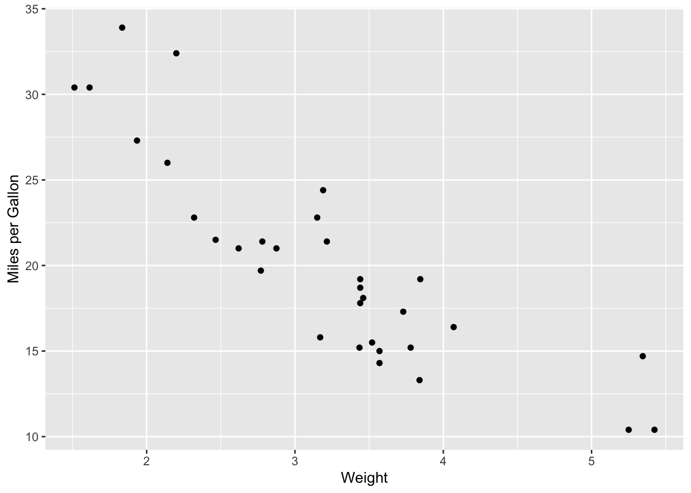
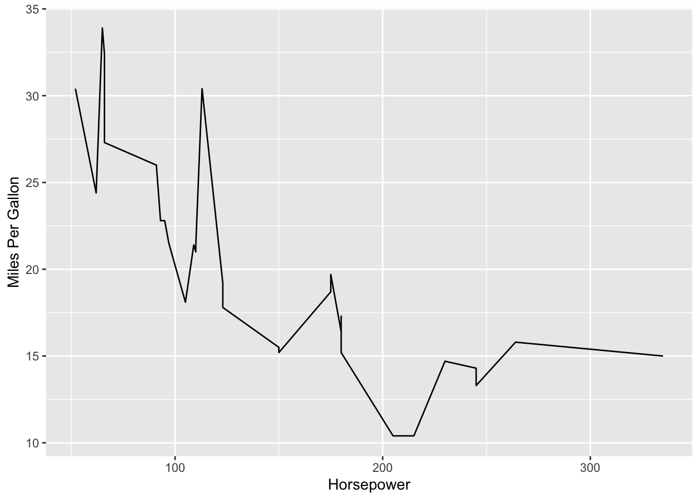
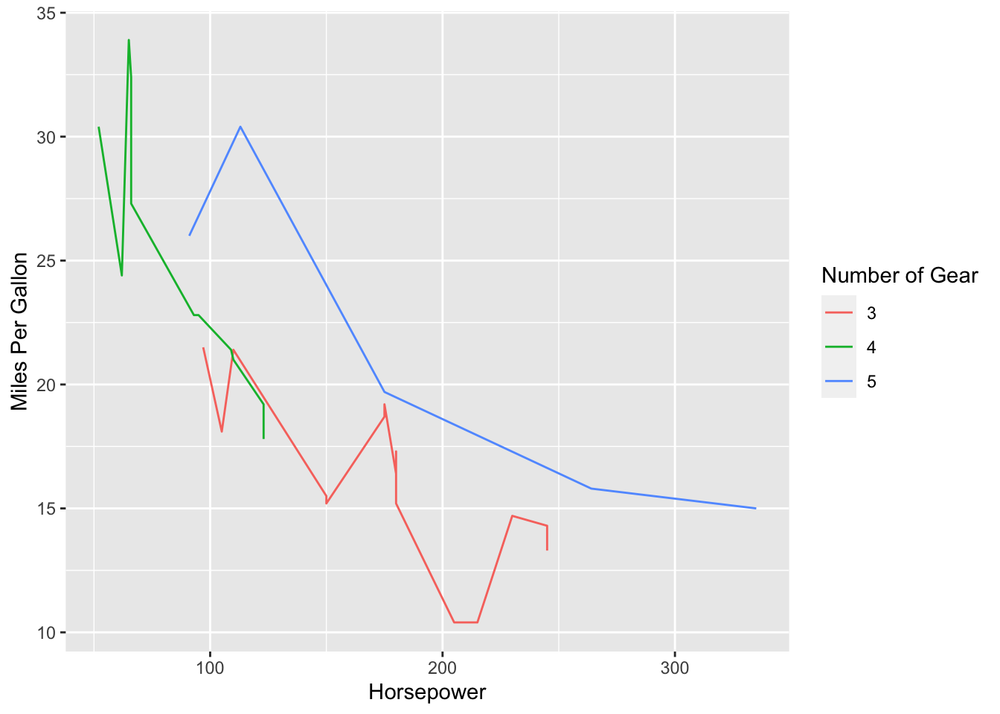
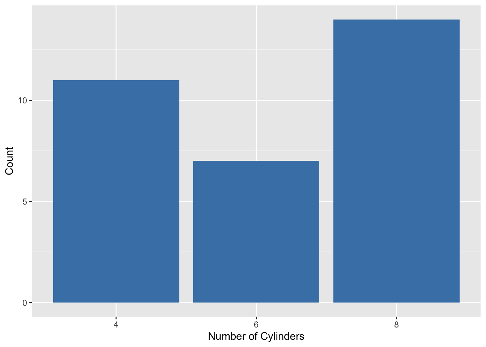
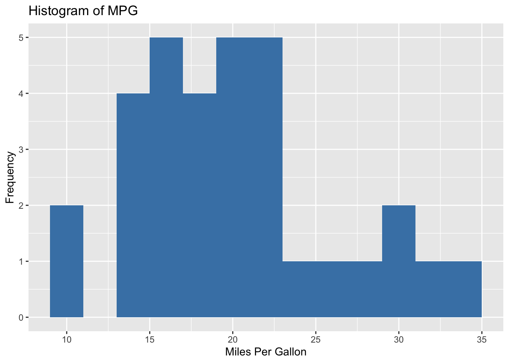
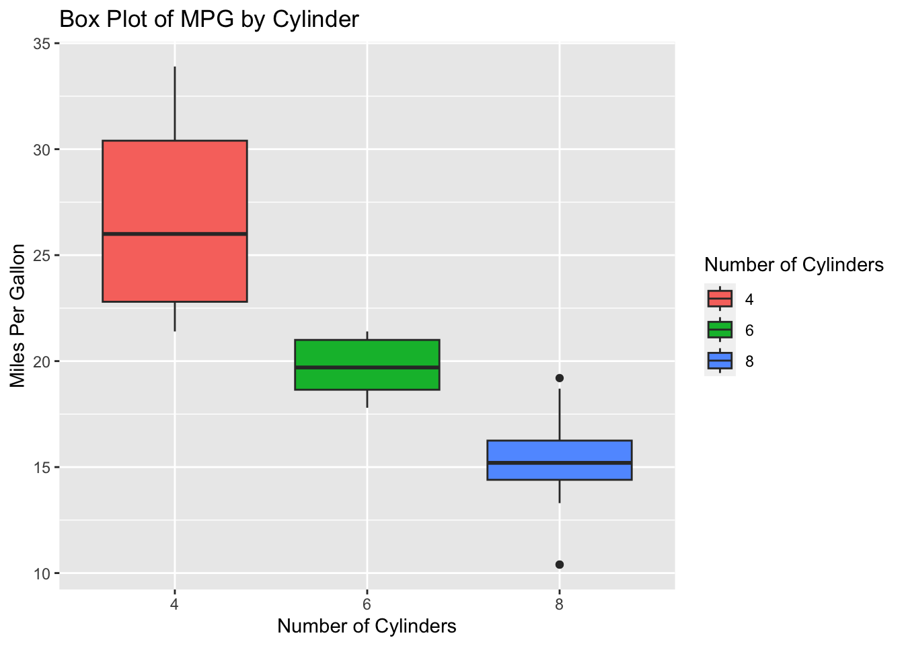
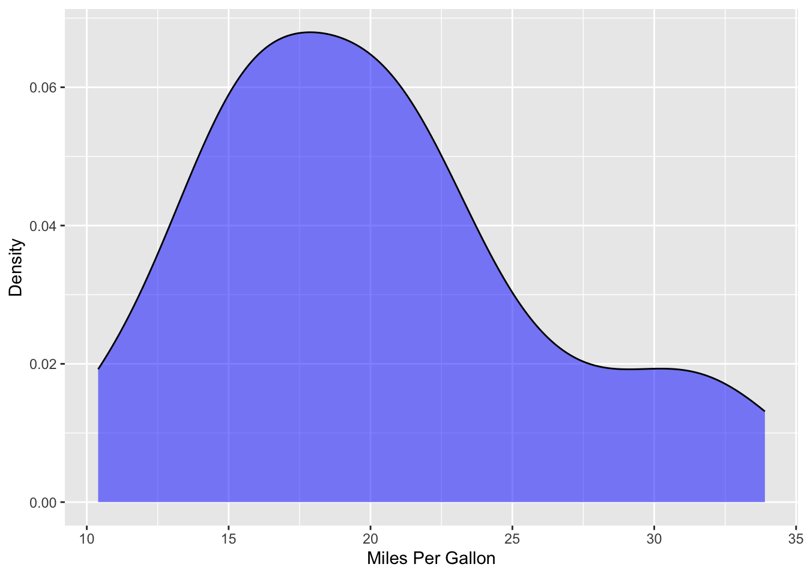
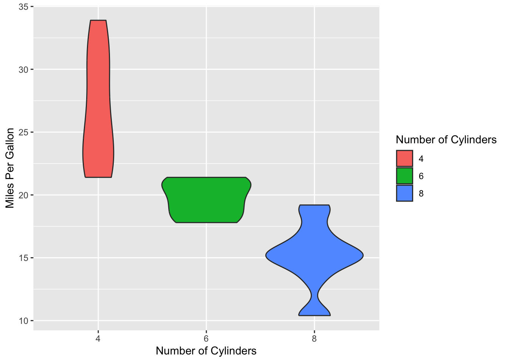
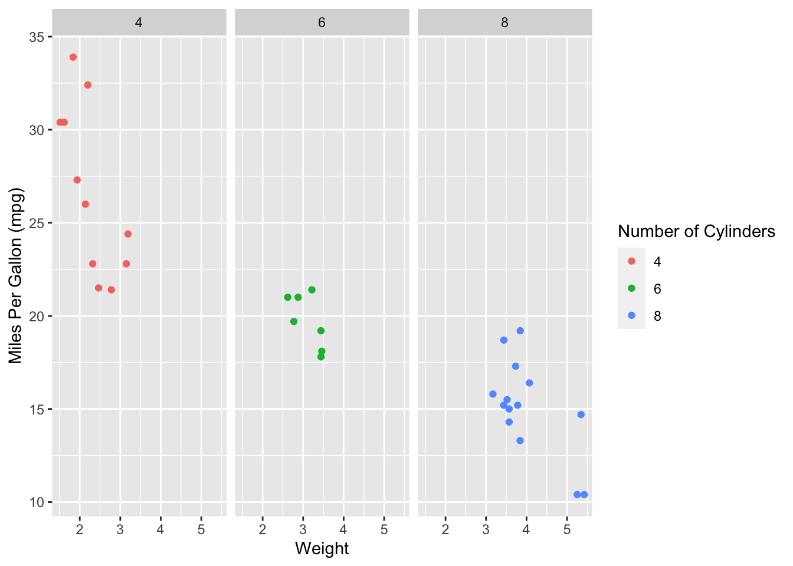
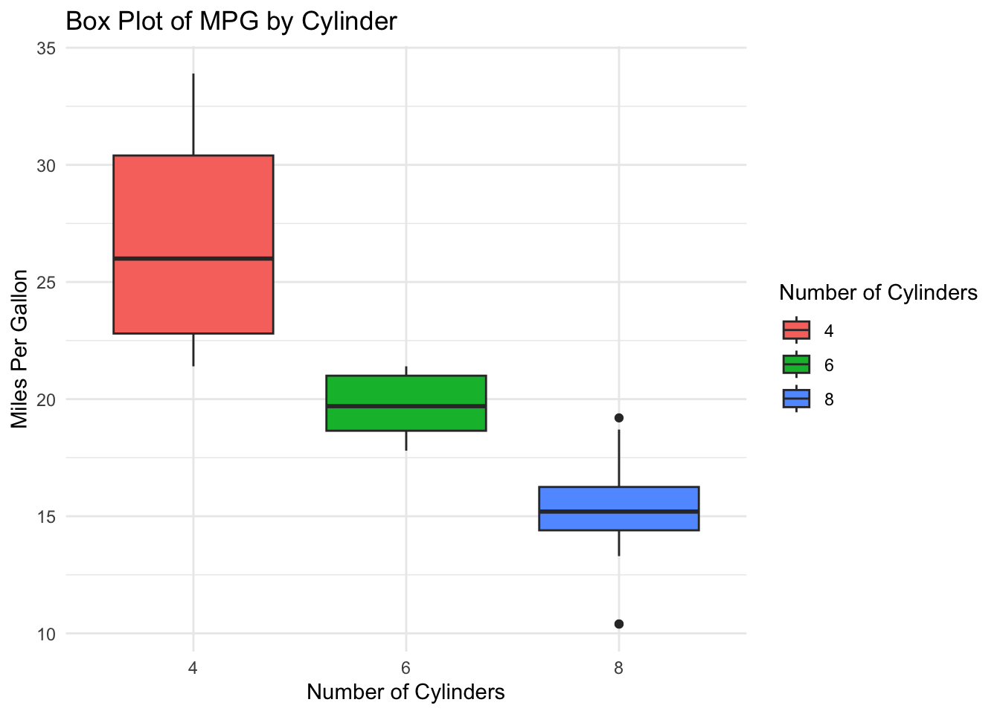

A ggplot is comprised of 1. data, 2. aesthetic mappings, and 3. geometries (the type of plot you would like to graph).
Beyond the bar charts and line graphs discussed in the previous section, ggplot2 offers a variety of other visualizations that you can create. We’ll be using the mtcars dataset, which is readily available in your R environment, to explore these options.
Shows relationship between two continuous variables
hide code
scatter <-ggplot(data = mtcars, aes(x = wt, y = mpg))+geom_point()+labs(x ="Weight",y ="Miles per Gallon")print(scatter)

Line Plot
Displays trends over time or ordered data
hide code
line <-ggplot(mtcars, aes(x = hp, y = mpg)) +geom_line() +labs(x ="Horsepower",y ="Miles Per Gallon")print(line)

hide code
# if you want to plot the trend of the different# values in a categorical variable, you can # set it as a color line <-ggplot(mtcars, aes(x = hp, y = mpg)) +geom_line(aes(color =factor(gear))) +labs(x ="Horsepower",y ="Miles Per Gallon", color ="Number of Gear")print(line)

Bar Plot
Displays counts or summary statistics of categorical data
hide code
bar <-ggplot(mtcars, aes(x =factor(cyl))) +geom_bar(fill ="steelblue") +labs(x ="Number of Cylinders",y ="Count")print(bar)

Histogram
Displays the distribution of a single continuous variable
hide code
hist <-ggplot(mtcars, aes(x = mpg)) +geom_histogram(binwidth =2, fill ="steelblue") +labs(title ="Histogram of MPG",x ="Miles Per Gallon",y ="Frequency")print(hist)

Boxplot
Displays the distribution of one or multiple continuous variables
hide code
# you can fill/color the boxes to correspond to a # specific categorical variable as well box <-ggplot(mtcars, aes(x =factor(cyl), y = mpg)) +geom_boxplot(aes(fill =factor(cyl))) +labs(title ="Box Plot of MPG by Cylinder",x ="Number of Cylinders",y ="Miles Per Gallon", fill ="Number of Cylinders")print(box)

Density Plot
Displays the distribution as a smoothed curve of a continuous variable
alpha: controls the transparency of the fill color.
hide code
density <-ggplot(mtcars, aes(x = mpg)) +geom_density(fill ="blue", alpha =0.5) +labs(x ="Miles Per Gallon",y ="Density")print(density)

Violin Plot
To show the distribution of a continuous variable by categories (the factor variable), combining aspects of a box plot and a density plot.
hide code
violin <-ggplot(mtcars, aes(x =factor(cyl), y = mpg)) +geom_violin(aes(fill =factor(cyl))) +labs(x ="Number of Cylinders",y ="Miles Per Gallon", fill ="Number of Cylinders")print(violin)

Faceted Plots
Creates multiple plots based on the values of a categorical variable
hide code
facet <-ggplot(mtcars, aes(x = wt, y = mpg)) +geom_point(aes(color =factor(cyl))) +facet_wrap(~ cyl) +labs(x ="Weight",y ="Miles Per Gallon (mpg)", color ="Number of Cylinders")print(facet)

Themes
ggplot2offers a variety of built-in themes that you can apply to change the appearance of your plots. Here are a few options you can use:
theme_grey()
theme_bw()
theme_linedraw()
theme_light()
theme_dark()
theme_minimal()
theme_classic()
theme_void()
Here is how you can implement:
hide code
# re-using the box plot, we can append a new# ggplot element to our variable boxbox <- box +theme_minimal()print(box)

Additional Customization
Case Study: Airquality Dataset
To discuss more on how to implement further customization of your visualizations with ggplot2, we will be using the built-in R dataset airquality.
hide code
library(tidyverse)
── Attaching core tidyverse packages ──────────────────────── tidyverse 2.0.0 ──
✔ dplyr 1.1.4 ✔ readr 2.1.5
✔ forcats 1.0.0 ✔ stringr 1.5.1
✔ lubridate 1.9.3 ✔ tibble 3.2.1
✔ purrr 1.0.2 ✔ tidyr 1.3.1
── Conflicts ────────────────────────────────────────── tidyverse_conflicts() ──
✖ dplyr::filter() masks stats::filter()
✖ dplyr::lag() masks stats::lag()
ℹ Use the conflicted package (<http://conflicted.r-lib.org/>) to force all conflicts to become errors
hide code
air <- airqualitysummary(air)
Ozone Solar.R Wind Temp
Min. : 1.00 Min. : 7.0 Min. : 1.700 Min. :56.00
1st Qu.: 18.00 1st Qu.:115.8 1st Qu.: 7.400 1st Qu.:72.00
Median : 31.50 Median :205.0 Median : 9.700 Median :79.00
Mean : 42.13 Mean :185.9 Mean : 9.958 Mean :77.88
3rd Qu.: 63.25 3rd Qu.:258.8 3rd Qu.:11.500 3rd Qu.:85.00
Max. :168.00 Max. :334.0 Max. :20.700 Max. :97.00
NA's :37 NA's :7
Month Day
Min. :5.000 Min. : 1.0
1st Qu.:6.000 1st Qu.: 8.0
Median :7.000 Median :16.0
Mean :6.993 Mean :15.8
3rd Qu.:8.000 3rd Qu.:23.0
Max. :9.000 Max. :31.0
The summary of our air dataset shows that it has 6 different variables, 4 continuous and 2 representing time. Let’s set labels and factor our Month column so that it represents the named Month instead of the numeric Month. With factor(), we can set labels onto our levels so when defining our labels, it will automatically map to the order of its current level.
We will be creating three distinct plots, encoding the ‘Month’ variable through the use of color. To visually represent time, we’ll employ a gradient of blue shades, with lighter blues indicating earlier months and darker blues representing later months. We will also ensure that all 3 plots utilize the same color gradient.
hide code
# create a vector that establishes our colors for each month months <-c("May", "June", "July", "August", "September")cols <-c("#CAF0F8", "#90E0EF", "#00B4D8","#0077B6", "#03045E")names(cols) <- months
Our first plot, we will visualize the distribution of Temp by Month. This will help us visualize the differences in temperature by month.
The scale_fill_manual() element of our ggplot ensures that the Months are colored by what we defined in the cols vector.
Within our theme() element, we are increasing the font size for the x-axis ticks (axis.text.x), x-axis title (axis.title.x), y-axis ticks (axis.text.y), and y-axis title (axis.title.y).
In our second plot, we will visualize the temperature trends by day. Additionally, we’ll incorporate wind speed as another variable. Given that wind speed is a continuous variable, we will represent it by varying the size of our data points—smaller points for lower wind speeds and larger points for higher speeds.
For this plot above, x is defined as 1:nrow(air)– the column Day in the air dataset corresponds to each month, however, since our dataset is ordered, the indices represent the true number of days.
The geom_point() element contains the argument size where we defined it to be Wind. ggplot will automatically determine what breakpoints are good to split these values/sizes up in.
The scale_color_manual() function ensures month is represented in the colors we discussed previously. Here, we used scale_color_manual instead of scale_fill_manual since our aesthetic for the points and line is a color rather than a fill.
geom_vline() allows you to add in vertical lines throughout the plot when provided an x-intercept. In our case, 31,61,92,123, and 153 represent the indices of our last days of the month.
guides(color="none") removes color from our legend, which will be useful later.
Our third plot will represent the relationship between Wind and Temp, but also including Ozone into the plot by using size to represent its value. However, in this plot, we would also like to label datapoints that represent the max temperature for each month.
Given that we’re incorporating Ozone into this plot, I will eliminate any NAs from the dataframe. Initially, I considered recoding these as 0, but since the Ozone column represents the average ozone in parts per billion, a zero value could mistakenly indicate an actual measurement.
hide code
air_remove <- air %>%filter(Ozone != (is.na(Ozone)))
Next, we are going to find the max temperatures by each year.
hide code
max_temp <- air %>%group_by(Month) %>%filter(Temp ==max(Temp))
The geom_text() element enables us to annotate the plot with maximum temperatures. We can create a dedicated dataset for it to process. By supplying only the max_temp dataframe, it will exclusively display the values contained within that dataset.